東方管制塔開発部は，東方管制塔をはじめとする東方系ツールの開発・配布を行っております．
ツール
東方管制塔
東方管制塔 EX
東方管制塔 Lite
東方管制塔 EX プラグイン
MARISA for 東方管制塔 EX
AutoThpracSelector
vpatch.ini エディタ
Card Attack to Markdown
サービス
東方管制塔 EX プラグインを探す
東方管制塔開発部 Lab
バナー
東方管制塔開発部のバナーです．リンクを設置する場合，リンク先は https://mashironn.net/ThGameMgr/ にしてください．